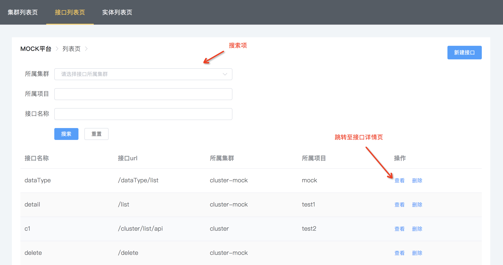
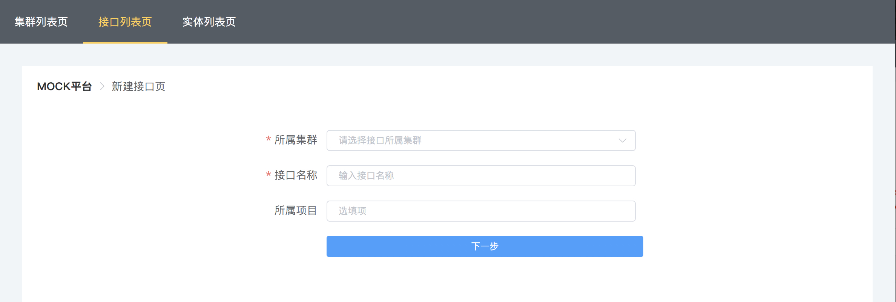
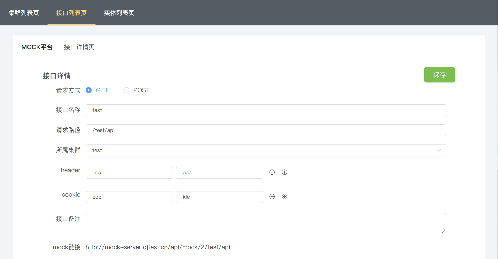
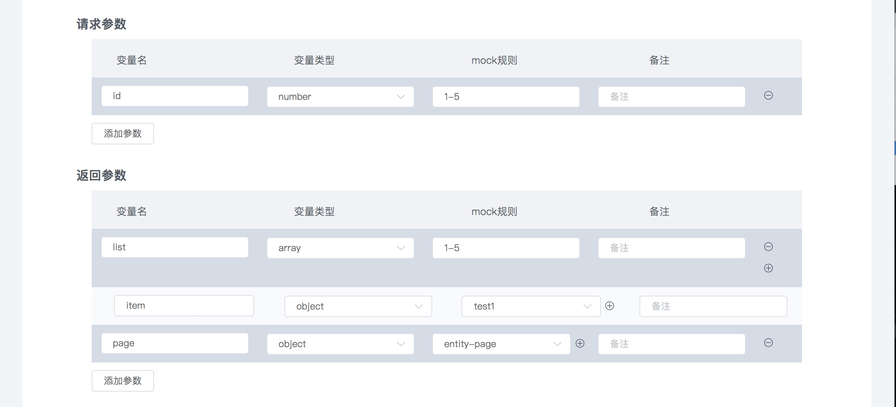
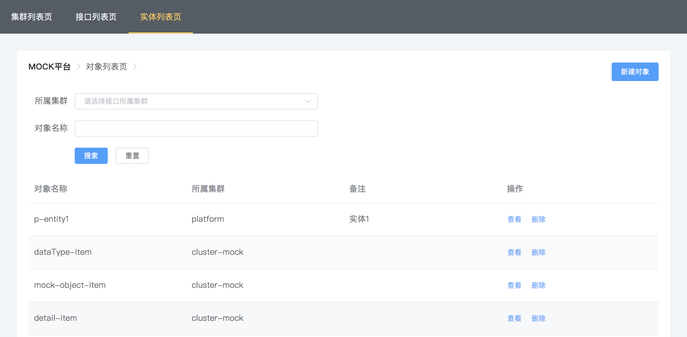
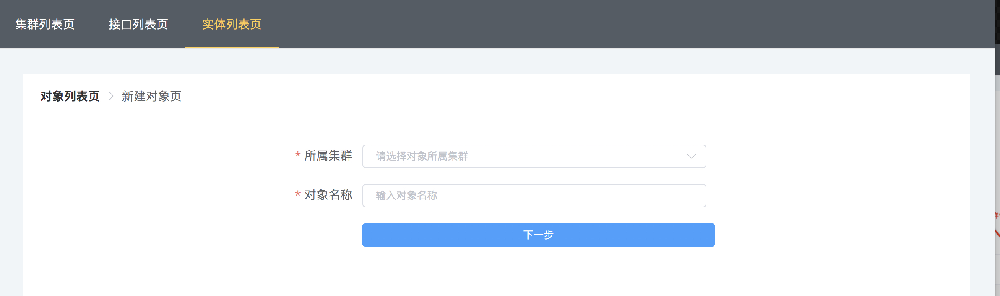
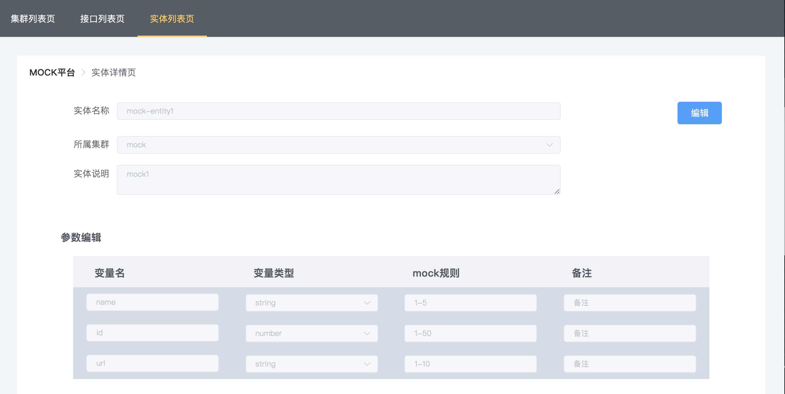

Quick guide
用户快速指引
集群相关
集群列表
进入
集群列表页，点击右上角
新建集群按钮，进入
新建集群页面
新建集群
新建集群页面同集群详情页类似，包含集群的相关信息填写
已经建好的集群不允许删除，不要创建无意义的集群
集群编辑
注意:创建集群时，集群模版参数必须添加，系统会默认一套作为接口返回的外层统一数据结构，可自行修改，其中选择的generic类型属性值是为了mock参数中将编辑的对象统一赋值
接口相关
接口列表
进入
接口列表页，点击右上角
新建接口按钮，进入
新建接口页面
列表页中，提供接口所属集群名,接口所属项目,接口名称三种搜索项

新建接口
必填项：所属集群,接口名称

接口编辑
接口相关信息
- 接口的请求路径：以
／开头，不允许输入汉字 - 接口的所属集群：选择已创建好的集群
- 接口的mock地址：接口的url及返回格式填写完成后，提供的一个在线模拟接口连接

注意:参数编辑中不需要再编辑外层的code等参数，关联集群中已经定义过了，接口会通用关联集群下的接口返回模版，此时定义的返回参数会包装成对象形式赋给集群模版中类型为generic的属性
接口请求参数
- 接口请求参数列表，用来记录参数的名称，类型，及相关备注字段，该请求参数列表可以为空
- 请求参数中若是定义为
object类型，需要提前定义需要关联的实体列表
接口响应数据
- 响应参数列表中，涉及到对象结构，都需要提前定义实体，这主要是为了复用实体，参数中只需要关联相关实体即可

接口mock功能
当接口信息中的路径增加后，并定义了返回参数，此时接口信息中的mock链接会提供模拟接口，返回接口中定义好的返回数据
实体相关
实体列表

进入
实体列表页，点击右上角
新建实体按钮，进入
新建实体页面
新建实体
选择实体所在的集群，输入实体名称，同一个集群下，名称不能重复

实体编辑
实体列表，点击查看进入实体详情页，可编辑相关参数

常用mock规则
mock.js规则三部分组成：属性名／生成规则／属性值==> 'name|rule': value
生成规则的七种形式：
字符串String：
数字Number：
布尔Boolean:
对象Object：
数组Array：